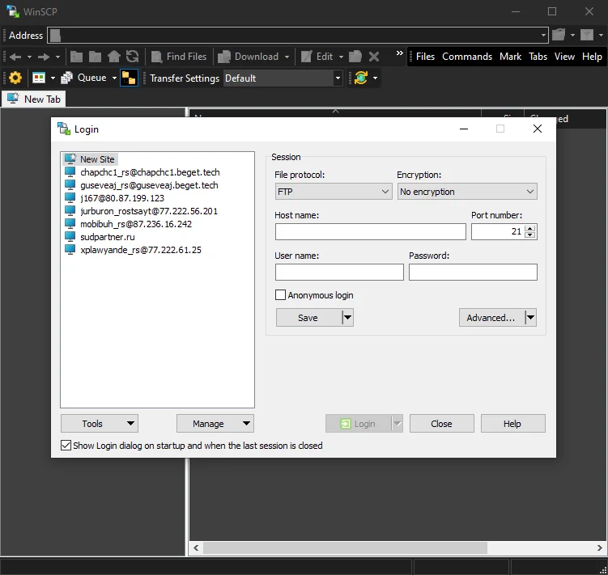
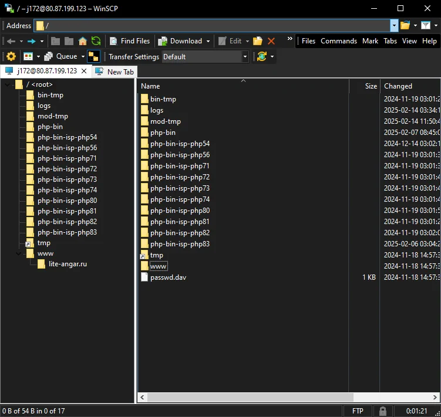
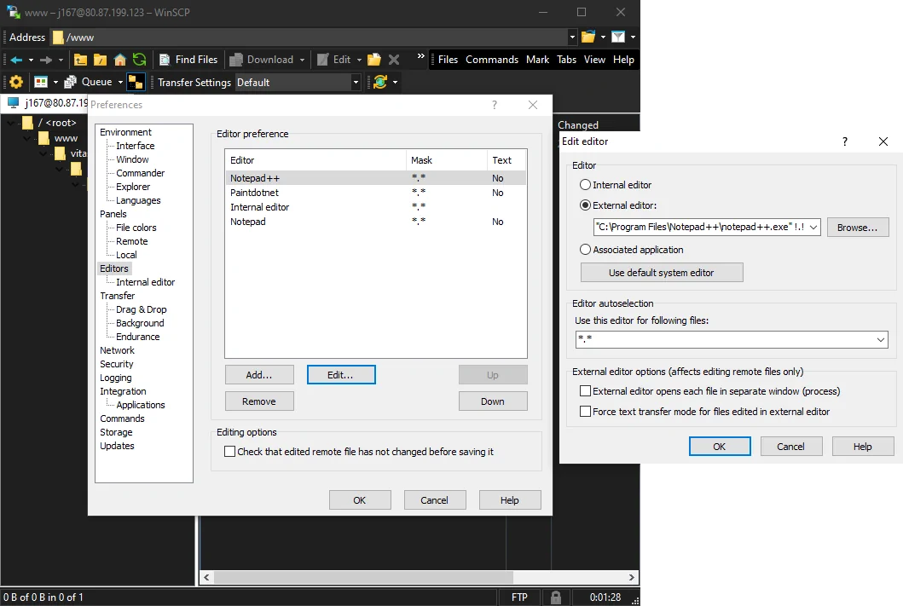

<!DOCTYPE html>
<html id='html' lang='en' dir='ltr'>
<head id='head'><meta charset='utf-8'>
	<meta name='viewport' content='width=device-width, height=device-height, initial-scale=1.0, viewport-fit=cover'>
	<title>Гайды по CMS</title>

	<!-- Va2 utility modules -->
	<script src='https://reineimi.github.io/va2/lib/va2.js' defer></script>
	<link rel='stylesheet' href='https://reineimi.github.io/va2/lib/va2.css'>

	<!-- Google stuff -->
	<link rel="preconnect" href="https://fonts.gstatic.com" />
	<link href="https://fonts.googleapis.com/css2?family=Material+Symbols+Outlined:opsz,wght,FILL,GRAD@20..48,100..700,0..1,-50..200" rel="stylesheet">
	<link href="https://fonts.googleapis.com/css2?family=Cinzel:wght@400..900&family=Dancing+Script:wght@400..700&family=Inconsolata:wght@200..900&family=Montserrat:ital,wght@0,100..900;1,100..900&family=Noto+Sans+JP:wght@100..900&family=Roboto+Slab:wght@100..900&family=Smooch+Sans:wght@100..900&family=VT323&display=swap" rel="stylesheet">

	<style>
	body { height: var(--dvh) !important; }
	.content { animation: slideFromR 0.5s; width: 100%; height: 100%; overflow: scroll; }
	.content > div.h1 { margin-top: auto; }
	.content div.h1, .content div.h2 { width: 90%; }
	.content div.h1 { color: var(--fontColorX) !important; margin-bottom: 1rem; padding-top: 1rem; }
	.content div.h2 { margin-top: 0px; font-size: 1.5rem; padding-bottom: 3rem; }
	.content div.h2 > hr { border: 0px; height: 1rem; }
	.content > gicon { padding: 1rem; font-size: 3rem; }
	.content > gicon:hover { color: var(--fontColorX); }
	.fulltext .h1, .fulltext h2 { padding: 0px; }
	.fulltext div.h1 { width: 70%; font-size: 1.6rem; font-weight: 800; margin: 0.5rem auto 0px auto; }
	.fulltext div.h2 { width: 90%; font-size: 1.25rem; margin: 0px auto; padding: 0px; }
	.fulltext h { font-family: inherit; font-size: 1.7rem; color: var(--blue); padding: 0px 0px 0.5rem 0px; display: inline-block; }
	.fulltext div.article { width: 90%; height: 80%; padding: 1rem 1.5rem; overflow: scroll; white-space: wrap; font-size: 1.2rem; line-height: 1.3; color: var(--fontColorX); border-radius: var(--corners); background: var(--windowFg); box-shadow: 0 0 2.5rem #0003; }
	.fulltext ol, .fulltext ul { padding: 0px 0px 0px 3rem; }
	.fulltext li { padding-top: 0.75rem; }
	.fulltext li::marker { color: var(--pink); font-weight: 800; }
	.fulltext ol > br, .fulltext ul > br { display: none; }
	.fulltext img { display: block; max-width: 100%; max-height: 25rem; margin-top: 1rem; cursor: pointer; transition: 0.3s; }
	.fulltext img.fillx { max-height: unset; background-color: var(--windowBg); }
	.items { margin: auto auto 1rem auto !important; padding: 1rem; gap: 1rem 1rem; min-width: 12rem; max-width: calc(75vw + 20vmin); max-height: 27rem; background: var(--windowFg);  }
	.items, .items > div { margin: 0px; border-radius: var(--corners); box-shadow: 0 0 2.5rem #0003; transition: 0.3s; }
	.items, .items > div:hover { transform: translateY(-0.75rem); }
	.items > div { width: 12rem; height: 12rem; background: var(--itemBg); color: var(--fontColorX); font-weight: 500; }
	.items > div > gicon { display: block; margin: 1rem 0px 2.5rem 0px; width: 100%; height: 5rem; font-size: 6rem; color: var(--blue); }
	.gallery { overflow: scroll; }
	.picture > div > p { width: 90%; margin-bottom: 0px; padding: 1.5rem; background: var(--windowFg); color: var(--fontColorX); border-radius: var(--corners); box-shadow: 0 0 2.5rem #0003; transition: 0.5s; }
	.picture > div:nth-child(2) { display: flex; bottom: 2rem; left: 0px; min-height: 5rem; }
	.picture > div:nth-child(2):hover > p { transform: translateY(-5rem); }
	.picture > div:nth-child(3) { width: 6rem; height: 3rem; left: 1rem; top: 1rem; font-size: 1.5rem; font-weight: 700; color: var(--pink); }
	.picture > div:nth-child(3) > div { width: 3rem; height: 3rem; border-radius: 50%; background: var(--windowFgX); transition: 0.5s; }
	.picture > div:nth-child(3):hover > div { transform: translateX(3rem); }
	a { color: var(--purple); }
	c { color: var(--green); font-weight: 700; }
	i { color: var(--brown); font-size: 0.8em; }
	b { color: var(--pink); }
	.gallery .slideN { animation: none; }
	#home > gicon:nth-child(3) { display: none; }
	.code { color: var(--fontColor); font-family: var(--fontCode); display: inline-block; background: var(--windowBg); padding: 1rem; margin: 1rem 0px 0.5rem 0px; border-radius: var(--corners); white-space: pre; }
	.fulltext .code { max-width: 100%; overflow: scroll; border: 0.2rem solid var(--itemBg); }
	</style>

	<script>{ "use strict";
	const def = {
		greeting: 'Добро пожаловать в интерактивный гайд по работе с различными CMS',
		intro: 'Выберите нужный вам раздел из списка ниже',
		intro_cms: 'Выберите нужную вам CMS из списка ниже',
		intro_meta: 'Дополнительную информацию ищите в разделе <c>Программирование</c>',
		skip: ' <i>(нажмите чтобы пролистать)</i>',
		articles: 'Чтобы сгенерировать HTML код из текста документа для вставки в статью, перейдите по '+
			'<a href="https://reineimi.github.io/html-article-editor/" target="_blank">данной ссылке</a>'+
			'<hr>О том, как оформлять статьи, почитайте в <c>Информация / Структура статей</c>',
		code: [
			'Обратите внимание на то что данное название может быть разным, но функционал один',
			'Это <c>редактор исходного кода</c>, сюда мы вставляем HTML код из генератора, ссылка на который указана на предыдущей странице',
			'Перед сохранением, пожалуйста, <c>проверьте и почистите</c> ваш код от <c>img</c> и <c>h1</c> тегов.',
			'В поле <c>Заголовок</c> вставляем один и единственный <c>h1</c> (их не должно быть несколько) из документа.',
			'<br><b>Не забудьте перепроверить статью после публикации</b>'
		],
		tkd: {
			intro: '<c>TKD</c> = <c>Title</c> (Заголовок), <c>Keywords</c> (Ключевые фразы), <c>Description</c> (Описание) страницы.<hr>',
			mask: '<c>TKD маска</c> - повторяющийся текст, в который вставляется переменное значение, например: "Товары от бренда <c>{BRAND}</c>". '
		},
	};

	const content = { [def.greeting]: {
		id: 'home',
		intro: def.intro+'<hr><i>(Списки могут быть листабельными, особенно на мобильных устройствах)</i>'+
			'<hr><i>(В процессе разработки)</i>',
		['Выкладывание статей']: {
			id: 'articles',
			icon: 'article_shortcut',
			intro: def.intro_cms,
			root: 'home',
			Tilda: {
				id: 'tilda',
				icon: 'web',
				intro: def.articles,
				root: 'articles',
				['Статьи блога']: {
					id: 'blog-tilda',
					icon: 'full_coverage',
					root: 'tilda',
					path: 'cms/tilda/blog',
					data: [0,
						[],
						//['.png', '<c></c>'],
					]
				},
				['Посадочные статьи']: {
					id: 'articles-tilda',
					icon: 'article',
					root: 'tilda',
					path: 'cms/tilda/article',
					data: [0,
						[],
					]
				}
			},
			['Joomla!']: {
				id: 'joomla',
				icon: 'web',
				intro: def.articles,
				root: 'articles',
				['Статьи блога']: {
					id: 'blog-joomla',
					icon: 'full_coverage',
					path: 'cms/joomla/blog',
					root: 'joomla',
					data: [0,
						['0.png', 'Нажмите на раздел <c>Контент</c> в левой части экрана'],
						['1.png', 'Нажмите на подраздел <c>Категории</c>'],
						['2.png', 'Нажмите на <c>цифру 184</c> в категории с алиасом <c>blog</c>'],
						['3.png', 'Нажмите на кнопку <c>Создать</c>'],
						['4.png', 'Нажмите на <c>Инструменты</c>'],
						['5.png', 'Выберите <c>Source Code+</c>. '+def.code[0]],
						['6.png', def.code[1]+def.skip],
						['7.png', def.code[2]+' Нажмите <c>Ок</c>'],
						['8.png', def.code[3]+def.skip],
						['9.png', 'Далее, ставим пробел в тексте'+def.skip],
						['9-1.png', 'Теперь нажмите на <c>Контент CMS</c>'],
						['9-2.png', '... И выберите <c>Подробнее</c>. Это разделитель статьи на текст превью и детальный текст'],
						['9-3.png', 'Давайте вставим текст превью над разделителем. Обычно это <c>Description</c> текст из документа статьи'+def.skip],
						['9-4.png', 'Теперь перейдите в раздел <c>Изображения и ссылки</c>'],
						['10.png', 'Нажмите на кнопку <c>Выбрать</c>'],
						['11.png', 'Нажмите на нужный вам файл'+def.skip],
						['12.png', 'Нажмите <c>Выбрать</c>'],
						['13_15-1.png', 'Мы установили картинку на превью статьи. Теперь листаем вниз'+def.skip],
						['14.png', 'Слеева от кнопки <c>Выбрать</c> вставляем путь изображения выше'+def.skip],
						['15.png', 'Листаем обратно вверх'+def.skip],
						['13_15-1.png', 'Переходим во вкладку <c>Отображение</c>'],
						['16_18-1.png', 'Отсюда, листаем в самый конец'+def.skip],
						['17.png', 'В поле <c>Заголовок страницы в браузере</c> вставляем текст <c>Title</c> из документа статьи'+def.skip],
						['18.png', 'Листаем обратно вверх'+def.skip],
						['16_18-1.png', 'Теперь перейдите во вкладку <c>Публикация</c>'],
						['19.png', 'В поле <c>Метатег Description</c> вставьте текст <c>Description</c> из документа статьи'+def.skip],
						['20.png', 'Нажмите <c>Сохранить и закрыть</c>'],
						['21.png', 'Готово. Теперь вы научились создавать статьи для блога на <c>Joomla!</c>'+def.code[4]],
					]
				},
				['Статьи блога (старые)']: {
					id: 'blog-joomla-old',
					icon: 'newspaper',
					path: 'cms/joomla/blog/old',
					root: 'joomla',
					data: [0,
						['0.png', 'Нажмите на раздел <c>Менеджер категорий</c> в левой части экрана'],
						['1.png', 'Нажмите на <c>цифру 88</c> в категории с алиасом <c>novosti</c>'],
						['2.png', 'Нажмите на кнопку <c>Создать</c>'],
						['3.png', 'Перед нами большое текстовое поле. '+def.code[1]],
						['4.png', 'Теперь избавимся от мета-данных в тексте статьи'+def.skip],
						['5.png', 'Далее, нажмите на кнопку <c>Подробнее</c> снизу'],
						['6.png', 'Это разделитель статьи на текст превью и полный текст. Также мы вставили <c>H1</c> текст из документа статьи в поле <c>Заголовок</c>'+def.skip],
						['7.png', 'Над разделителем вставляем вступитльный текст, обычно это <c>Description</c> текст из документа статьи. Далее, нажмите на <c>Изображения и ссылки</c>'],
						['8.png', 'Отсюда, нажмите на первую кнопку <c>Выбрать</c>'],
						['9.png', 'Выберите или загрузите нужный вам файл и нажмите <c>Вставить</c>'],
						['10.png', 'Проделайте то же самое с изображением ниже. Далее, перейдите во вкладку <c>Параметры отображения</c>'],
						['11_13-1.png', 'Пролистайте в самый конец'+def.skip],
						['12.png', 'В поле <c>Заголовок страницы в браузере</c> вставляем текст <c>Title</c> из документа статьи'+def.skip],
						['13.png', 'Отсюда, листаем обратно ввеерх'+def.skip],
						['11_13-1.png', 'Теперь нажмите на вкладку <c>Параметры публикации</c>'],
						['14.png', 'В поле <c>Метатег Description</c> вставьте текст <c>Description</c> из документа статьи'+def.skip],
						['15.png', 'Теперь всё готово. Нажмите <c>Сохранить и закрыть</c> если всё было выполнено успешно.'+def.code[4]],
					]
				},
				['Посадочные статьи']: {
					id: 'articles-joomla',
					icon: 'article',
					path: 'cms/joomla/article',
					root: 'joomla',
					data: [0,
						['0.png', 'Нажмите на раздел <c>Контент</c> в левой части экрана'],
						['1.png', 'Нажмите на подраздел <c>Модули сайта</c>'],
						['2.png', 'Нажмите на зеленую кнопку <c>Создать</c>'],
						['3.png', 'Выберите вариант <c>HTML-код</c>'],
						['4.png', 'Нажмите на <c>Инструменты</c>'],
						['5.png', 'Выберите <c>Source Code+</c>. '+def.code[0]],
						['6.png', def.code[1]+def.skip],
						['7.png', def.code[2]+' Нажмите <c>Сохранить</c>'],
						['8.png', def.code[3]+' Далее, нажмите на <c>Позиция</c> в правой части экрана'],
						['9.png', 'В выпадающем списке ищем название <c>Rostsayt</c>'+def.skip],
						['10.png', '... И выбираем позицию <c>Bottom [bottom]</c>'],
						['11.png', 'Теперь перейдите во вкладку <c>Привязка к пунктам меню</c>'],
						['12.png', 'Нажмите на список <c>Привязка модуля</c>'],
						['13.png', 'Выберите вариант <c>Только на выбранных страницах</c>'],
						['14.png', 'Нажмите на кнопку <c>Нет</c> в <c>Привязать к пунктам меню</c>'],
						['15.png', 'Пролистайте вниз чтобы найти нужный вам пункт'+def.skip],
						['16.png', '... И выберите его'+def.skip],
						['17.png', 'Нажмите <c>Сохранить и закрыть</c>'],
						['18.png', 'Теперь вы знаете как добавлять посадочные статьи на <c>Joomla!</c>'+def.code[4]],
					]
				},
				['Создание блога']: {
					id: 'blog-create-joomla',
					icon: 'contextual_token',
					path: 'cms/joomla/blog-create',
					root: 'joomla',
					data: [0,
						['0.png', 'Нажмите на раздел <c>Контент / Категории</c>'],
						['1.png', 'Нажмите кнопку <c>Создать</c>'],
						['2.png', 'Введите слово <c>Блог</c> в поле <i>Заголовок*</i> и нажмите <c>Сохранить и закрыть</c>'],
						['3.png', 'Далее, перейдите в раздел <c>Меню / Main menu</c> (или, в данном случае, <c>Меню / Меню</c>)'],
						['4.png', 'Нажмите кнопку <c>Создать</c>'],
						['5.png', 'В поле <i>Тип пункта меню*</i> нажмите <c>Выбрать</c>'],
						['6.png', 'Выберите вариант <c>Материалы / Блог категории</c>'],
						['7.png', 'Далее, в поле <i>Категория*</i> нажмите <c>Выбрать</c>'],
						['8.png', 'Выберите категорию <c>Блог</c>'],
						['9.png', 'Напишите заголовок <c>Блог</c> и перейдите во вкладку <c>Категория</c>'],
						['10.png', 'Скопируйте настройки ниже и перейдите во вкладку <c>Отображение</c>'],
						['11.png', 'Снова скопируйте настройки ниже и нажмите <c>Сохранить и закрыть.</c><br>'+
							'После этого посетите раздел: <c>Программирование / Joomla! / Шаблон блога</c>']
					]
				},
			},
			Bitrix: {
				id: 'bitrix',
				icon: 'web',
				intro: def.articles,
				root: 'articles',
				['Статьи блога']: {
					id: 'blog-bitrix',
					icon: 'full_coverage',
					path: 'cms/bitrix/blog',
					root: 'bitrix',
					data: [0,
						[]
					]
				},
				['Посадочные статьи']: {
					id: 'articles-bitrix',
					icon: 'article',
					path: 'cms/bitrix/article',
					root: 'bitrix',
					data: [0,
						['1.png', '<i>(Если у вас на сайте уже имеется шаблон seo_texts для посадочных статей, то пролистайте до слайда 11)</i><br>'+
							'Дважды нажмите на верхнюю панель'+def.skip],
						['2.png', 'Раскройте список <c>Шаблон сайта</c>'],
						['3.png', 'Выберите опцию <c>В панели управления / Редактировать шаблон</c>'],
						['4.png', 'Пролистайте вниз до <c>footer</c> блока'+def.skip],
						['5.png', 'Добавьте пару пробелов, чтобы было заметнее, и вставьте код шаблона посадочных статей, который '+
							'вы можете найти в разделе <c>Программирование / Bitrix / Посадочные текста</c>'],
						['6.png', 'Нажмите <c>Сохранить</c>'],
						['7.png', 'Перейдите в <c>Контент / Файлы и папки</c>'],
						['8.png', 'Нажмите <c>Добавить</c>'],
						['9.png', 'Выберите <c>Добавить папку</c>'],
						['10.png', 'Введите имя папки: <c>seo_texts</c> и нажмите <c>Сохранить</c>'],
						['11.png', 'Добавьте новую папку'],
						['12.png', 'Введите имя папки, равное пути к нужной вам странице. Например, <c>blog</c>.<br>'+
							'Если путь длинный - создайте столько папок внутри созданной, сколько требуется, согласно пути.<br>Далее, нажмите <c>Сохранить</c>'],
						['13.png', 'Снова нажмите <c>Сохранить</c>'],
						['14.png', 'Отсюда, нажмите на три вертикальной полоски рядом с созданным файлом, и выберите <c>Редактировать как PHP</c>'],
						['15.png', 'Удалите контент данного файла и вставьте ваш текст'+def.skip],
						['16.png', 'Нажмите <c>Сохранить</c>.<br>Если вы выполнили всё правильно, то посадочные текста должны появиться на нужных вам страницах.'+
							'<br>Также, имеется небольшая вероятность, что версия нашего кода не совпадает с версией CMS на сайте'],
					]
				}
			},
			WordPress: {
				id: 'wordpress',
				icon: 'web',
				intro: def.articles+'<hr><i>В этой CMS есть несколько решений, здесь всё зависит от подключенных плагинов</i>',
				root: 'articles',
				['Статьи блога']: {
					id: 'blog-wordpress',
					icon: 'full_coverage',
					root: 'wordpress',
					path: 'cms/wordpress/blog',
					data: [0,
						['0.png', 'Перейдите в раздел <c>Записи - Все записи</c> в левой части экрана (либо сразу <c>Добавить запись</c>)'],
						['1.png', 'Нажмите на кнопку <c>Добавить запись</c> в верхней части экрана'],
						['2.png', 'Нажмите на черную кнопку <c>[+]</c> чтобы добавить новый блок'],
						['3.png', 'Выберите тип блока <c>Произвольный HTML</c>'],
						['4.png', 'Вставьте в блок контент вашей статьи, почистите её от артефактов и вставьте <c>H1</c> в поле <c>Добавить заголовок</c>'+def.skip],
						['5.png', 'В правой части экрана выберите рубрику <c>Статьи</c>'],
						['6.png', 'Отсюда, нажмите на кнопку <c>Установить изображение статьи</c>'],
						['7.png', 'Загрузите ваше изображение'+def.skip],
						['8.png', 'Далее, нажмите на кнопку <c>Установить изображение статьи</c>'],
						['9.png', 'На некоторых сайтах также есть SEO плагин внизу текущей страницы, в котором мы указываем <c>Title (Заголовок) и Description (Описание)</c>.<br>Здесь его нет, поэтому нажимаем <c>Отпубликовать</c>. На этом всё'],
					]
				},
				['Посадочные статьи (Категории)']: {
					id: 'articles-wordpress-cat',
					icon: 'topic',
					root: 'wordpress',
					path: 'cms/wordpress/article-cat',
					data: [0,
						['0.png', 'На нужной вам категории, нажмите <c>Изменить категорию</c> в верхней части экрана'],
						['1.png', 'Здесь, ниже, мы видим поле <c>Описание</c>. Очистим его'+def.skip],
						['2.png', '... И вставим в него контент нашей статьи'+def.skip],
						['3.png', 'Далее, пролистываем в конец страницы'+def.skip],
						['4.png', '... И нажимаем <c>Отпубликовать</c>. Если данный метод работает, статья будет отпубликована'+def.skip],
					]
				},
				['Посадочные статьи']: {
					id: 'articles-wordpress',
					icon: 'article',
					root: 'wordpress',
					path: 'cms/wordpress/article',
					data: [0,
						[],
						//['.png', '<c></c>'],
					]
				}
			},
		},
		['Настройка мета-данных']: {
			id: 'metadata',
			icon: 'all_match',
			intro: def.intro_meta+'<hr>'+def.intro_cms,
			root: 'home',
			['Joomla!']: {
				id: 'joomla-meta',
				icon: 'web',
				intro: def.tkd.intro+'В старых версиях Joomla! всё находится в анаголичных позициях<hr>'+def.intro,
				root: 'articles',
				['TKD']: {
					id: 'joomla-tkd',
					icon: 'list_alt_check',
					path: 'cms/joomla/tkd',
					root: 'joomla-meta',
					data: [0,
						['0.png', 'Нажмите на раздел <c>Меню</c> в левой части экрана'],
						['1.png', 'Нажмите на подраздел <c>Main Menu</c>'],
						['2.png', 'Выберите нужную вам страницу (здесь: <c>Контакты</c>)'],
						['3.png', 'Нажмите на вкладку <c>Страница</c>'],
						['4.png', 'В поле <c>Заголовок страницы в браузере</c> вставьте нужный <c>Title</c>'+def.skip],
						['5.png', 'Перейдите во вкладку <c>Метаданные</c>'],
						['6.png', 'В поле <c>Метатег Description</c> вставьте нужный <c>Description</c>'+def.skip],
						['7.png', 'Готово. <b>Если в списке меню нет страницы, измените её через Материалы</b>. Нажмите <c>Сохранить и закрыть</c> чтобы закончить'],
					]
				},
			},
			['Bitrix']: {
				id: 'bitrix-meta',
				icon: 'web',
				intro: def.tkd.intro+def.intro,
				root: 'articles',
				['TKD']: {
					id: 'bitrix-tkd',
					icon: 'list_alt_check',
					path: 'cms/bitrix/tkd',
					root: 'bitrix-meta',
					data: [0,
						['0.png', '<c>Дважды щелкните</c> на панель сверху'+def.skip],
						['1.png', 'Нажмите <c>Изменить страницу</c>'],
						['2.png', 'Выберите опцию <c>В режиме PHP-кода</c>'],
						['3.png', 'Здесь нам нужно изменить выделенные значения внутри ковычек, идущих после запятой'+def.skip],
						['4.png', 'Вставьте соответствующие данные и нажмите <c>Сохранить</c>'],
						['5.png', 'Готово. Это одно из нескольких решений'+def.skip]
					]
				},
				['TKD маски']: {
					id: 'bitrix-tkd-mask',
					icon: 'data_object',
					path: 'cms/bitrix/tkd-mask',
					root: 'bitrix-meta',
					data: [0,
						['0.png', def.tkd.mask+'Здесь они уже интегрированы. Нажмите на <c>Контент</c>'],
						['1.png', 'Перейдите в <c>Каталоги</c> или другой нужный вам раздел'],
						['2.png', 'Выберите нужный вам подраздел (здесь: <c>Моторное масло</c>). Нажмите на три вертикальной полоски возле названия'],
						['3.png', 'Нажмите <c>Изменить</c>'],
						['4.png', 'Перейдите во вкладку <c>SEO</c>'],
						['5.png', 'Для этого раздела, вставьте в <c>META TITLE & DESCRIPTION</c> уникальный текст раздела'+def.skip],
						['6.png', 'Для элементов раздела, вставьте текст-маску в те же поля, в <c>Настройки для элементов</c>. '+
							'Здесь мы используем зарезервированную переменную <c>{=this.Name}</c>. Нажмите <c>Сохранить</c>'],
					]
				},
			},
		},
		['Программирование']: {
			id: 'code',
			icon: 'code',
			intro: def.intro_cms,
			root: 'home',
			['Любая CMS']: {
				id: 'any-cms-code',
				icon: 'apps',
				intro: 0,
				root: 'code',
				['Cookies Popup']: {
					id: 'cookies',
					icon: 'cookie',
					intro: 'Диалоговое окно соглашения с Cookies',
					text: `
					Простой код для вставки в <c>< head ></c>:
<x class="code">< !-- Cookies Popup -- >
< style >
:root { --accentColor: <c>#c22</c>; }
.__cookies::before { content: "Этот сайт использует файлы cookie для хранения данных. Продолжая использовать сайт, Вы даете согласие на работу с этими файлами."; }
.__cookies  > button::before { content: "Принять"; }
.__cookies  > * { margin: auto; }
.__cookies { z-index: 99; display: flex; flex-wrap: wrap; position: fixed; bottom: 5vmin; left: 5vmin; padding: 1.5rem 2rem; width: 60vmin; background: #222; color: #bbb; border-radius: 1.5rem; box-shadow: 0 0 2rem #0007; text-shadow: 2px 2px 5px #000; }
.__cookies  > button { background: var(--accentColor); color: #fff; margin-top: 1.5rem; padding: 0.5rem 3rem; border: none; border-radius: 0.5rem; cursor: pointer; box-shadow: 0.2rem 0.2rem 1rem #0007; box-sizing: border-box; transition: 0.2s; }
.__cookies  > button:hover { filter: brightness(0.9); transform: scale(0.95); }
< /style >
< script async defer >
window.addEventListener("load", ()= >{
	if (!window.localStorage.getItem('cookies_accepted')) {
		document.body.insertAdjacentHTML('beforeend',
		"< div class='__cookies' onclick='window.localStorage.setItem(\"cookies_accepted\", 1); this.remove()' >< button >< /button >< /div >");
	}
});
< /script >
</x>
					Отмеченный цвет в переменной <c>--accentColor</c> должен равняться основному цвету кнопок на сайте.
					`
				},
			},
			Bitrix: {
				id: 'bitrix-code',
				icon: 'web',
				intro: 0,
				root: 'code',
				['Посадочные текста']: {
					id: 'bitrix-code-articles',
					icon: 'article',
					intro: 'Шаблон(ы) для посадочных текстов в Bitrix',
					text: `Ниже предоставлен образец шаблона посадочных текстов для Bitrix.
					О том, как с ним работать, вы можете посмотреть в разделе:
					<c>Выкладывание статей / Bitrix / Посадочные статьи</c>.
					<x class="code">< div class="<c>container</c> _article" >
	< ? $APPLICATION- >IncludeComponent(
		"bitrix:main.include",
		".default",
		array(
			"COMPONENT_TEMPLATE" = > ".default",
			"PATH" = > SITE_DIR . "seo_texts" . $_SERVER['REQUEST_URI'] . "index.php",
			"AREA_FILE_SHOW" = > "file",
			"AREA_FILE_SUFFIX" = > "",
			"AREA_FILE_RECURSIVE" = > "Y"
		),
		false
	); ? >
< /div ></x>
					Класс <c>container</c> зависит от класса главного контейнера, который используется на вашем текущем сайте.
					Суть контейнера в том, чтобы текст не растянулся на весь экран.`
				},
			},
			['Joomla!']: {
				id: 'joomla-code',
				icon: 'web',
				intro: 0,
				root: 'code',
				['Шаблон блога']: {
					id: 'joomla-code-blog',
					icon: 'contextual_token',
					intro: 'Шаблон страницы блога на Joomla!',
					text: `CSS код для стилизации страницы блога:
<x class="code">.com-content-category-blog, .com-content-article { margin-top: calc(100px + 1.5rem); }
.blog-items { display: flex; flex-wrap: wrap; justify-content: space-between; }
.blog-item { width: calc(50% - 1rem); margin-bottom: 2rem; background: #fff; border-radius: 1rem; border: 0.1rem solid #ccc; box-shadow: 0 1rem 2rem #0005; box-sizing: border-box; padding: 1rem; transition: 0.3s; }
@media screen and (max-width: 600px) {
	.blog-item { width: 100%; }
}
.blog-item:hover { transform: translateY(-0.5rem); box-shadow: 0 1rem 2rem #0007; }
.items-leading  > .blog-item { width: 100%; }
.items-leading  > .blog-item .item-image img { object-position: 50% 20%; }
.blog-item  > .item-content  > .page-header a { color: #777 !important; }
.blog-item  > .item-content  > .page-header a:hover { color: #222 !important; }
.blog-item  > .item-content  > .page-header h2 { font-size: 1.6rem !important; line-height: 1.1; }
.blog-item  > .item-image { width: 100%; }
.blog-item  > .item-image img { width: 100%; height: 20rem; object-fit: cover; border-radius: 0.75rem; border: 0.1rem solid #ccc; }
</x>
					Данный код вставляется в конце файла <c>template.css</c>, который вы можете найти по примерному пути на FTP сервере:
					<a>/www/<i>(домен)</i>/templates/rostsayt-4/css</a>
					Вы можете стилизовать его по своему усмотрению, это просто рабочий образец.`
				},
			}
		},
		['Работа с РП']: {
			id: 'sheets',
			icon: 'table',
			root: 'home',
			['Создание РП']: {
				id: 'sheet_new',
				icon: 'backup_table',
				root: 'sheets',
				path: 'any/sheets/create',
				data: [0,
					['0.png', 'Перейдите по <a href="https://docs.google.com/spreadsheets/d/19EdaXblGisRUCPP8wW7zoaZi3lx3O65MjpDdIqkZszc/edit?pli=1&gid=1009400070#gid=1009400070"'+
						'target="_blank">данной ссылке</a> чтобы открыть текущий шаблон РП'],
					['1.png', 'Выделите нужный вам регион и нажмите клавиши <c>Ctrl+C</c> чтобы скопировать'],
					['2.png', 'Вставьте в новую таблицу при помощи <c>Ctrl+V</c>'],
					['3.png', 'Кликните на один из столбцов <c>с черными строками</c>, затем зажмите <c>Ctrl</c> и выделите остальные столбцы такого же типа'],
					['4.png', 'Наведите на <c>правый конец одного столбца</c>, чтобы курсор мыши поменялся, и <c>щелкните два раза</c>. Таким образом они сожмутся до нужной нам ширины'],
					['5.png', 'Теперь нажмите на <c>иконку заливки</c> и выберите <c>черный цвет</c>'],
					['6.png', 'Столбцы приняли нужный нам вид'+def.skip],
					['7.png', 'Таким же образом залейте те ячейки, которые потеряли свой цвет при копировании'],
					['8.png', 'Теперь, потянув за, опять же, <c>правый край столбца</c>, расширьте те столбцы, в которых важно видеть как можно больше информации'],
					['9.png', 'Далее, выделите <c>все ячейки</c>, зажав <c>Ctrl+A</c> или нажав на <c>нулевую ячейку (между 1 и A)</c>'],
					['10.png', '... И выберите <c>Обрезать текст</c> в меню <c>Перенос текста</c>'],
					['11.png', 'Также, в меню <c>Выравнивание по вертикали</c>, выберите вариант <c>По центру</c>'],
					['12.png', 'Напоследок, потяните за <c>жирные полоски в нижнем и правом углу нулевой ячейки</c> для того, чтобы закрепить указанные в шаблоне столбцы и строки'],
					['13.png', 'Выглядеть это будет таким образом'+def.skip],
					['14.png', 'Теперь, внизу, переименуйте вашу вкладку на соответствующий раздел, <c>щелкнув на название дважды</c>'],
					['15.png', 'Желательно нажать <c>правой кнопкой мыши</c> по нашей вкладке и изменить её цвет на тот, что указан в шаблоне'],
					['16.png', 'Далее, нажимаем на кнопку <c>+</c> чтобы добавить новую вкладку'],
					['17.png', 'Копируем точно таким же образом и выполняем все пройденные ранее этапы'],
					['18.png', 'Если вкладка приняла почти такой же вид, что и в шаблоне - вы справились с задачей успешно'],
					['19.png', 'В конкретно данной вкладке стоит поставить <c>Перенос текста</c> в <c>трёх первых столбцах</c> на <c>Перекрывать соседние ячейки</c>'],
					['20.png', 'Избавляемся от ненужных данных и продолжаем заполнять таблицу таким же способом. На этом все этапы завершены'+def.skip],
				],
			},
		},
		['Информация']: {
			id: 'info',
			icon: 'info',
			intro: 'Общая информация о различных ресурсах',
			root: 'home',
			['Подключение по FTP']: {
				id: 'ftp_connection',
				icon: 'cloud',
				intro: 'Подключение к серверам по FTP с WinSCP',
				text: `Скачайте и установите программу <c>WinSCP</c> по ссылке ниже:
				https://sourceforge.net/projects/winscp/files/latest/download

				Откройте программу и в следующих полях введите указанную информацию:
				<b>File protocol</b>: <c>FTP</c> или <c>SFTP</c> протокол (обычно первый)
				<b>Host name</b>: <c>FTP адрес</c> нужного сервера
				<b>User name</b>: <c>Имя пользователя</c>
				<b>Password</b>: <c>Пароль пользователя</c>
				
				После чего, нажмите <c>Login</c>.
				
				Отсюда, вы можете настроить интерфейс как вам удобно и пользоваться программой.
				Для того, чтобы найти нужную вам информацию по FTP, прочитайте статью <c>Поиск по FTP</c> в этом же разделе.

				Также, в настройках вы можете выбрать удобный для вас редактор текста:
				`
			},
			['Поиск по FTP']: {
				id: 'grep',
				icon: 'document_search',
				intro: 'Как искать информацию в файлах по FTP',
				text: `
				Для того, чтобы найти какую-либо информацию внутри файлов по FTP, вы можете создать файл <c>grep.php</c> в корневой папке сайта.
				Внутри данного файла мы вставляем безопасный код:
<x class="code">< ?
$str_grep=<c>""</c>;
$str_find=<c>""</c>;
$grep=shell_exec("grep -rn --include=\\*<c>.php</c> '$str_grep' .");
$find=shell_exec("find . -name $str_find");
echo '< pre >--- grep: ---< br >';
print_r(str_replace(array("< ", " >"), array("&lt;", "&gt;"), $grep));
echo '--- find: ---< br >';
print_r(str_replace(array("< ", " >"), array("&lt;", "&gt;"), $find));
echo '< /pre >';
? >
</x>
				Внутри помеченных ковычек (<c>""</c>) вписываем то, что нам нужно найти.
				Для <c>str_grep</c> мы вписываем то, что нужно найти <c>внутри .php файлов</c> (расширение файла можно поменять);
				Для <c>str_find</c> мы вписываем <c>название файла</c>, которого нужно найти.

				Далее, чтобы активировать скрипт, мы просто вставляем <c>/grep.php</c> в конце адреса нужного сайта в браузере.`
			},
			['Структура статей']: {
				id: 'article_struct',
				icon: 'text_compare',
				intro: 'Структуризация посадочных текстов и статей для блога',
				text: `<h>Стилизация и структуризация</h>
				Статьи должны (более или менее) следовать данному CSS шаблону:
<x class='code'>._article { margin-top: 2rem; margin-bottom: 2rem; box-sizing: border-box; <c>padding: 1rem;</c> }
._article * { margin-bottom: 1rem; margin-top: 0px; <c>font-family: Arial</c>; }
._article li { margin-bottom: 1rem; margin-left: 2.5rem; }
._article li  > p { padding: 0px; margin: 0px; }
._article ol, ._article ul { margin-bottom: 0.5rem !important; padding: 0px !important; }
._article ul  > li { list-style-type: disc; }
._article ul ul  > li { list-style-type: circle; }
._article ol  > li { list-style-type: decimal; }
</x>
				Отсюда, <c>_article</c> является классом контейнера, в котором лежит текст статьи. Например, для посадочных статей Тильды мы пишем:
<x class='code'>< div class="t-container _article" >
	<i>(наша статья здесь)</i>
< /div >
</x>
				Значение <c>font-family</c> должно следовать основному шрифту на сайте.
				Выделенное значение <c>padding: 1rem;</c> является опциональным. Например, на Тильде лучше оставить его.

				Текст для статей лучше вставлять в виде HTML кода, используя данный редактор:
				https://reineimi.github.io/html-article-editor/. Он очищает код от лишних артефактов.

				<h>Теги и изображения</h>
				Проверьте чтобы в итоговом тексте не было никаких тегов кроме:
				<c>< h2 >, < h3 >, < h4 >, < p >, < a >, < ol >, < ul >, < li >, < b >, < i >, < div ></c>.

				Изображения обычно вставляются не в текст, а в интерфейсе CMS.
				В том случае если нам нужно вставить дополнительное изображение (<c>< img ></c>), или в CMS нет возможности вставки, оно должно иметь локальную ссылку.
				То есть, вместо <c>src="https:/..."</c> должен быть прописан путь на локальный файл: <c>src="/my/file.jpg"</c>.
				Также, в изображениях обязательно должен присутствовать аттрибут <c>alt</c>. Его можно оставить и пустым.

				Еще важно подметить, что изображения желательно компрессировать в один из следующих форматов:
				<ol>
				<li>PNG 8-bit depth;</li>
				<li>JPG 80-90% quality.</li>
				</ol>
				То есть, желательно чтобы размер изображения не превышал 500 кб.

				<h>Частые ошибки</h>
				На что стоит обращать внимание при проверке статей в первую очередь:<ol>
				<li><c>Иерархия заголовков</c> - Она не должна быть нарушена. После <c>H2</c> не должен идти <c>H1</c> или <c>H4</c>.</li>
				<li><c>Метаданные</c> - В статьях блога обычно пишут Title & Description, а также вставляют главное изображение и H1. Их в тексте быть не должно.</li>
				<li><c>Заголовок вместо параграфа</c> - При написании статей иногда возникают такие ошибки, когда вместо <c>< p ></c> стоит, например, <c>< h2 ></c>. В статье это нужно исправить.</li>
				<li><c>Сливание текста</c> - Из-за того, что мы избавились от <c>< br ></c> тегов, текст может сливаться (в основном внутри <c>< li ></c>).
				В таком случае мы ставим <c>точку и пробел</c> между текстами.
				Также, если первая часть слитого текста - словосочетание, то его можно обернуть в <c>< b ></c>.</li>
				<li><c>Название страницы в посадочных</c> - Иногда первым H2 заголовком идет название страницы (например: "Главная").
				В таком случае мы удаляем его и делаем H2 заголовком следующий заголовок.</li>
				</ol>`
			},
			/*
			['...']: {
				id: '...',
				icon: 'more',
				intro: '...',
				text: `...`,
			},
			*/
		}
	}}

	window.addEventListener('load', ()=>{
		let cleanHTML = function(str) {
			loop(str.matchAll(/http[s]?:\/\/[^ \n]+/g), (i,v)=>{
				let m = v[0].replace(/\.$/g, '');
				str = str.replaceAll(m, `<a href='${m}' target='_blank'>${m}</a>`);
			});
			return str.replaceAll('&', '&amp;').replaceAll('< ', '&lt;').replaceAll(' >', '&gt;').replaceAll(/\n/g, '<br>');
		}

		let dbload = function(data) {
			data.loop((i,v)=>{
				let id = v.id;
				// Sections and articles
				if (type(v) === 'object') {
					if (!v.path && (i !== 'data')) {
						let em = create(0, {
							id: v.id,
							className: 'content center',
							innerHTML: `<div class='h1'>${i}</div><div class='h2'>${v.intro || def.intro}</div>` +
							`<gicon class='f abs ltop pt nosel' onclick="hide(this.root()); show(1, '${data.id}');">arrow_back</gicon>` +
							`<gicon class='f abs rtop pt nosel' onclick="fullscreen()">fullscreen</gicon>`
						});
						hide(em);
						if (!v.text) {
							let items = create(0, {className: 'items center'}, em);
							v.loop((name,dt)=>{
								if ((type(dt) === 'object') && (name !== 'data')) {
									create(0, {
										className: 'nosel pt',
										innerHTML: `<gicon>${dt.icon || ''}</gicon><p>${name}</p>`,
										onclick: ()=>{
											hide(em); show(1, dt.id);
										}
									}, items);
								}
							});
						}
						else {
							mk(em, `<div class='tl article'>${cleanHTML(v.text)}</div>`);
							addclass(em, 'fulltext');
							loop(tags(em, 'img'), (i,v)=>{
								v.onclick = ()=>{ setclass(v, 'fillx'); }
							});
						}
					}
					dbload(v);
				}
				// Slideviews (galleries)
				if ((type(v) === 'array') && (v.len() > 1)) {
					let em = create(0, {id: data.id, className: 'content center'});
					hide(em);
					let items = create(0, {className: 'gallery w h'}, em);
					let path = data.path || '';
					let emid = path.replaceAll('/', '-');
					loop(v.len(), (n)=>{
						if (type(v[n]) === 'array') {
							let img = v[n][0] || '';
							let text = v[n][1] || '';
							let _this = create(0, {
								id: `${emid}-${n}`,
								className: 'picture w h slided',
								innerHTML:
									`<div class='fill bgcont' style='background-image:url("${path}/${img}")'></div>`+
									`<div class='abs w'><p>${text}.</p></div>`+
									`<div class='abs nosel'><div class='f'><p class='i'>${n}</p></div></div>`
							}, items);
							if (n !== (v.len()-1)) {
								_this.onclick = ()=>{ va2slide(`${emid}-`, 'n'); }
							} else {
								_this.onclick = ()=>{ hide(data.id); show(1, data.root); va2slide(`${emid}-`, 1); }
							}
						}
					});
					va2slide(`${emid}-`, 1);
				}
			});
		}

		dbload(content);
		show(1, 'home');
	});
	}</script>
</head>

<body id='main' class="center" onload="init()"></body>

</html>
